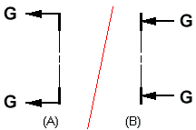

Formatting cutting plane annotations
The default content and appearance of cutting plane lines, terminators, and captions is defined in the Drawing View style that is applied to the view.
For example, you can define the following formatting for cutting plane annotations:
- Lines and arrows
-
Define the type and size of cutting plane lines and arrows on the Lines tab in the Drawing View Style dialog box. There, you can specify whether the cutting plane arrows point toward or away from the cutting plane, as well as the offset between the arrow and the line.
- Text location
-
Define where the cutting plane caption text is placed with respect to the cutting plane lines using the Cutting plane caption location list on the Caption Format tab in the Drawing View Style dialog box.
Example:The Direction Line Open End option positions the cutting plane caption text at the open end of the cutting plane.
-
If your cutting plane terminator option is set to Point Away, the text is positioned as shown at (A).
-
If your cutting plane terminator option is set to Point Toward, the text is positioned as shown in (B).

-
- Cutting plane label text
-
Define the alphanumeric label text that appears in the caption of a cutting plane using the Specify Annotation Letters dialog box. You can open this dialog box from the Annotation tab in the Solid Edge Options dialog box.
For more information, see Assigning view annotation labels.
For more information, see the following help topics: